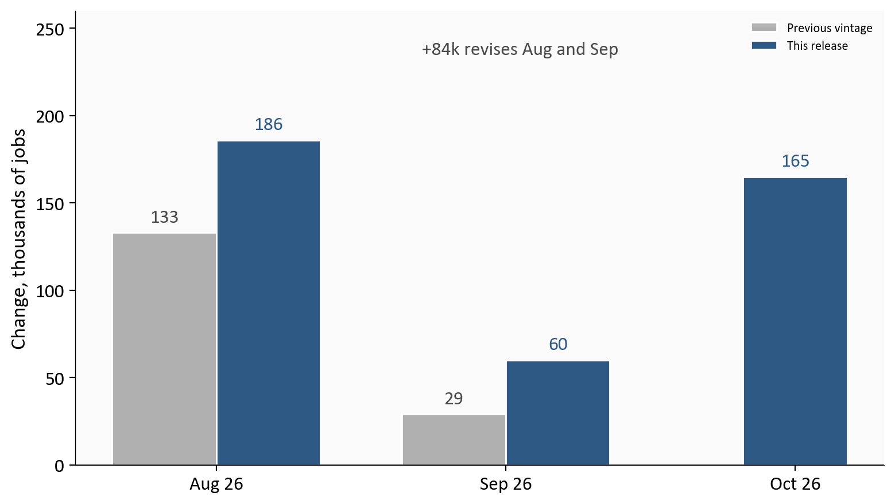
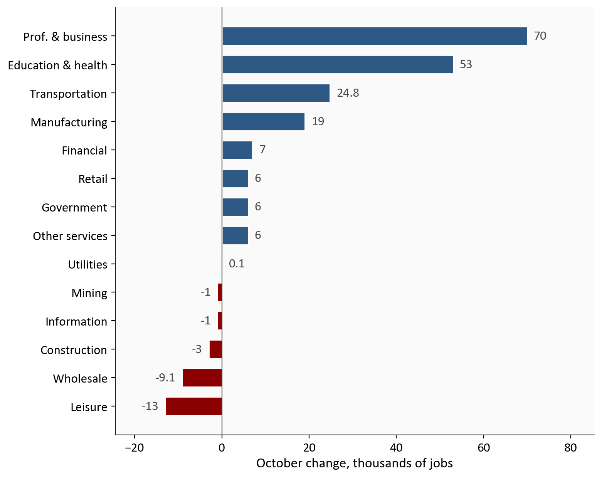
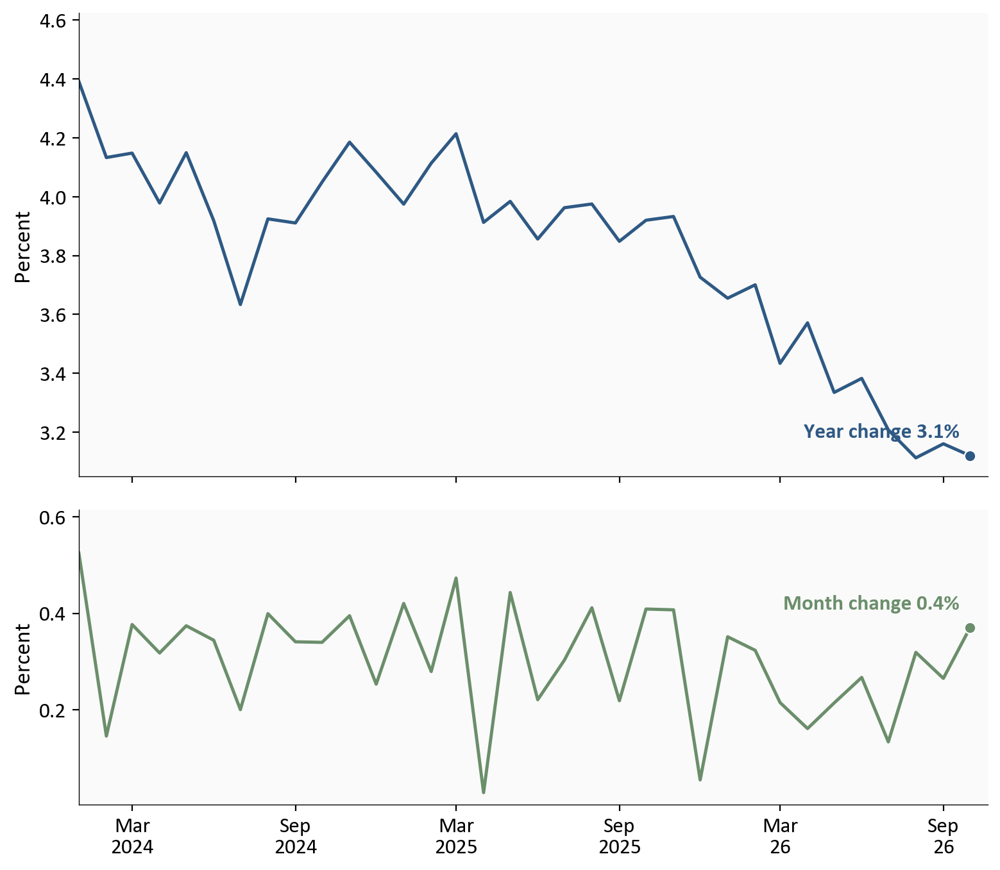
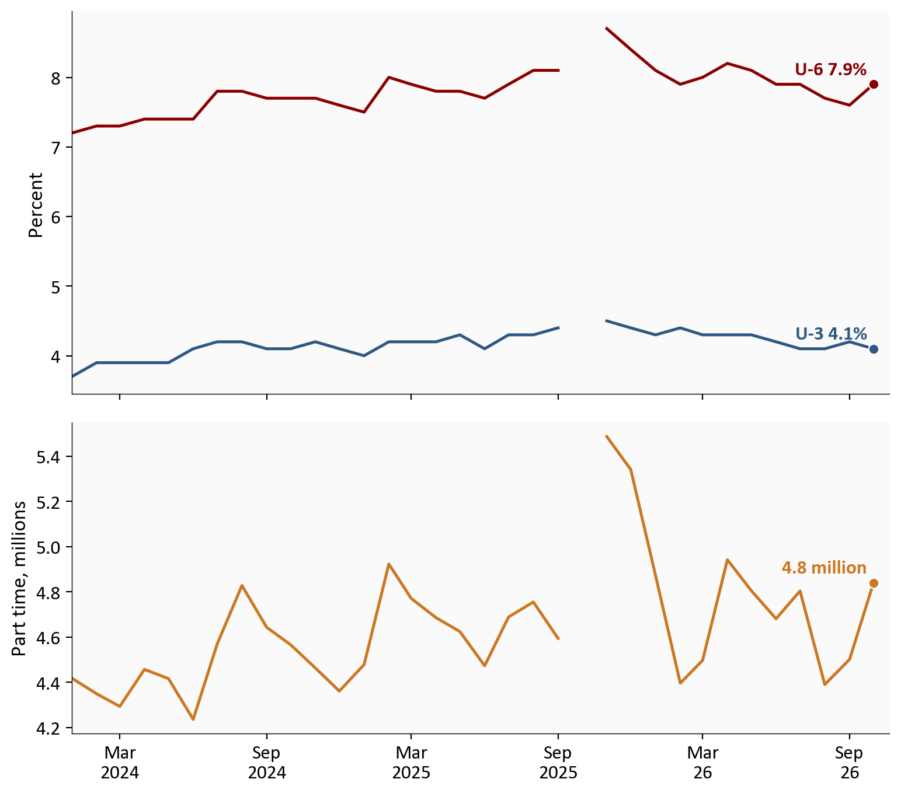
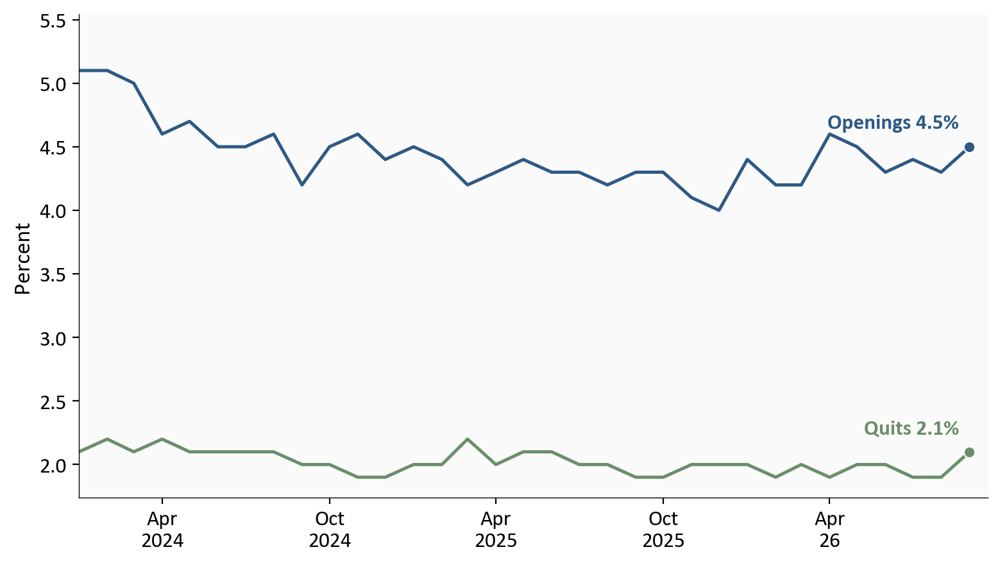

October payrolls
+165,000
Oct 26
Aug/Sep revision
+84,000
Unemployment rate
4.1%
from 4.2%
U-6 unemployment rate
7.9%
from 7.6%
Yoram Gilboa
November 8, 2026
Two surveys came out on the same morning, and they do not tell one story. Nonfarm payrolls, the establishment survey’s count of jobs on employer records, rose 165,000 in October 26. The same release revised August from 133,000 to 186,000 and September from 29,000 to 60,000. That 84,000 rewrites the two earlier months. It is separate from October’s 165,000. On October 2, September had been a 29,000 gain and the three-month average was 51,000. The payroll picture is firmer than that estimate.
The household survey asks people, not employers. Its unemployment rate, U-3, is the share of the labor force that is jobless and looking for work. U-3 fell from 4.2% to 4.1%. In the same month, involuntary part-time employment, people who have a job and wanted full-time hours, rose 339,000. U-6 adds those workers, and people marginally attached to the labor force, to the unemployed. U-6 rose from 7.6% to 7.9%. Nothing in the payroll revision caused those household changes. More jobs were counted, and more of the employed were short of full-time hours.
The Python code used to generate each chart is included in this post. Click on any code block to see the full implementation. The complete data pipeline includes:
01_fetch_data.py: Verifies the committed November FRED snapshots. It does not download a newer vintage. Its refresh option writes a side copy under data/raw/refresh/ and does not replace the snapshots. Payrolls and the household survey use the November 6 vintage. JOLTS uses the November 3 vintage. Claims use the November 5 vintage.02_clean_data.py: Turns levels into monthly job changes and into the percent changes in hourly earnings.04_compute_stats.py: Writes the summary statistics for the prose and cards, and checks them against the news release.Payrolls, household rates, wages, hours, and industry detail are from the archived BLS Employment Situation. September openings and quits are from the archived JOLTS release. Weekly claims are from the Department of Labor claims release. The series are read from the committed FRED snapshots. Previously published payroll estimates are the figures quoted in the November 6 release.
A revision is a later estimate, after more employers report and seasonal factors are recalculated. August was raised 53,000, from 133,000 to 186,000. September was raised 31,000, from 29,000 to 60,000. Gray bars are the October 2 estimates. October has no gray bar. BLS puts the 90 percent confidence interval for the monthly change in total nonfarm employment on the order of plus or minus 122,000. Around this month’s 165,000, that interval runs from 43,000 to 287,000. It does not include zero, so the gain is large relative to the survey’s usual sampling error, and it is still a first estimate. Private employers added 159,000. Government added 6,000. October also sits above the 48,000 average monthly gain over the prior 12 months, which is a longer window than the three-month average below.
# Gray bars are the previous published estimates. Blue bars are this release.
# October has no previous bar. The annotation is the sum of the two revisions.
changes = pd.read_csv(CLEAN_DIR / "payroll_changes.csv", parse_dates=["month"])
labels = [short_year(pd.Timestamp(month).strftime("%b %Y")) for month in changes["month"]]
x = np.arange(len(changes))
width = 0.36
prev = changes["previous_k"].to_numpy(dtype=float)
curr = changes["current_k"].to_numpy(dtype=float)
has_prev = ~np.isnan(prev)
curr_x = np.where(has_prev, x + width / 2, x)
fig, ax = plt.subplots(figsize=(8.0, 4.6))
ax.bar(
x[has_prev] - width / 2,
prev[has_prev],
width,
color=COLORS["light"],
edgecolor="white",
label="Previous vintage",
)
ax.bar(
curr_x,
curr,
width,
color=COLORS["primary"],
edgecolor="white",
label="This release",
)
ax.axhline(0, color=COLORS["neutral"], linewidth=0.8)
for xpos, value in zip(x[has_prev] - width / 2, prev[has_prev]):
ax.text(xpos, value + 4, f"{value:.0f}", ha="center", va="bottom", fontsize=12, color=COLORS["neutral"])
for xpos, value in zip(curr_x, curr):
ax.text(xpos, value + 4, f"{value:.0f}", ha="center", va="bottom", fontsize=12, color=COLORS["primary"])
ax.text(
1.05,
235,
f"+{fmt(stats['combined_revision_k'], 0)}k revises Aug and Sep",
ha="center",
fontsize=12,
color=COLORS["neutral"],
)
ax.set_xticks(x)
ax.set_xticklabels(labels)
ax.set_ylabel("Change, thousands of jobs")
ax.set_ylim(0, 260)
ax.legend(frameon=False, loc="upper right")
plt.tight_layout()
fig.savefig(IMG_DIR / "payroll-revisions.png", dpi=150, bbox_inches="tight")
Source: Archived BLS Employment Situation, November 6, 2026; November 6 snapshot of FRED PAYEMS.
The three-month average is 137,000 on this release and was 51,000 on October 2. July’s change on this snapshot is still -10,000, the same figure the October 2 release published, so the month leaving the window is not a new revision mixed in from a later vintage.
| Piece | 3-month payroll | 3-month average |
|---|---|---|
| July-September average, October 2 vintage | 152,000 | 51,000 |
| Revisions to August and September | 84,000 | 28,000 |
| July leaves, October enters | 175,000 | 58,000 |
| August-October average, this release | 411,000 | 137,000 |
The bars below are one layer of industries.1 Private education and health services added 53,000. Health care, which the news release puts at 42,000, sits inside that bar and is not drawn again.
Professional and business services added 70,000, against a 15,000 average month over the prior year. Inside it, professional, scientific, and technical services added 33,000, administrative and support services 28,000, and management of companies 9,000. Temporary help, part of the same sector, rose 18,600. Health care’s 42,000 and that 70,000 are 112,000 together, 67.9% of the net payroll gain. That is a share of net growth. It is not a share of gross hiring, and it is not the sum of two bars: the education-and-health bar is the wider 53,000.
The diffusion index is the share of private industries with rising employment, plus half of those unchanged. Fifty is a tie. October is 57.6, September on this vintage is 54.2, and manufacturing is 62.5. More industries rose than fell. Leisure is -13,000 and wholesale is -9,100, which is what “little changed” looks like as a point estimate: not zero, and not the center of the month.
# One bar per major sector. Sub-industries are left off so a parent and its child are not both drawn.
sectors = pd.read_csv(CLEAN_DIR / "sector_changes.csv").sort_values("change_k")
colors = [COLORS["accent"] if value < 0 else COLORS["primary"] for value in sectors["change_k"]]
fig, ax = plt.subplots(figsize=(8.0, 6.4))
ax.barh(sectors["industry"], sectors["change_k"], color=colors, edgecolor="white", height=0.65)
ax.axvline(0, color=COLORS["neutral"], linewidth=0.8)
span = float(sectors["change_k"].abs().max())
for industry, value in zip(sectors["industry"], sectors["change_k"]):
label = f"{value:.0f}" if float(value).is_integer() else f"{value:.1f}"
nudge = 1.5 if value >= 0 else -1.5
align = "left" if value >= 0 else "right"
ax.text(value + nudge, industry, label, va="center", ha=align, fontsize=12, color=COLORS["neutral"])
ax.set_xlim(-span * 0.35, span * 1.22)
ax.set_xlabel("October change, thousands of jobs")
plt.tight_layout()
fig.savefig(IMG_DIR / "sector-bars.png", dpi=150, bbox_inches="tight")
Average hourly earnings are gross dollars per hour for all employees on private payrolls. The people in the average change from month to month, so the series is not a raise for the same worker and it is not take-home pay. It rose 14 cents, 0.4%, to 38.00 dollars, from 37.86 dollars in September on this vintage. From January 2024 to October 26, the year rate has come down from 4.4% to 3.1%. October’s month change is firmer than a flat month. It does not undo that longer cooling. The top panel is the year change. The bottom panel is the month change.
The all-employee workweek stayed at 34.4 hours. Average weekly earnings, the product of the published hourly average and the published workweek, moved from 1302.38 dollars to 1307.20 dollars, 0.4%. Hours did not contribute. Production and nonsupervisory workers are a narrower group and not a line on the chart. Their hourly earnings rose 12 cents, to 32.75 dollars, and their workweek fell 0.1 hour, from 33.9 to 33.8. The product of those two averages went from 1106.16 dollars to 1106.95 dollars, about 0.07%. A higher hourly rate and a shorter week nearly offset. This is still an average, not a person’s paycheck, and it is not adjusted for prices. October’s inflation report is not in this post.
# Percent changes are already on the clean file. This cell only plots them.
earn = pd.read_csv(CLEAN_DIR / "earnings.csv", index_col="date", parse_dates=True)
earn = earn.loc["2024-01-01":]
fig, axes = plt.subplots(
2, 1, figsize=(8.0, 7.0), sharex=True, gridspec_kw={"height_ratios": [2.2, 1.4]}
)
series = [
(axes[0], earn["ahe_yoy"], "Year change", COLORS["primary"]),
(axes[1], earn["ahe_mom"], "Month change", COLORS["secondary"]),
]
for ax, values, name, color in series:
ax.plot(values.index, values, color=color, linewidth=1.8)
last_x = values.index[-1]
last_y = float(values.iloc[-1])
ax.scatter(last_x, last_y, s=40, color=color, zorder=5, edgecolors="white", linewidth=0.8)
ax.annotate(
f"{name} {last_y:.1f}%",
xy=(last_x, last_y),
xytext=(-6, 8),
textcoords="offset points",
ha="right",
va="bottom",
fontsize=12,
fontweight="bold",
color=color,
)
ax.set_ylabel("Percent")
ax.xaxis.set_major_locator(mdates.MonthLocator(interval=6))
ax.xaxis.set_major_formatter(ticker.FuncFormatter(month_year))
ax.set_xlim(values.index[0], last_x + pd.Timedelta(days=20))
ymin, ymax = ax.get_ylim()
ax.set_ylim(ymin, ymax + 0.12 * (ymax - ymin))
plt.tight_layout()
fig.savefig(IMG_DIR / "earnings.png", dpi=150, bbox_inches="tight")
Source: November 6 snapshot of FRED average hourly earnings, total private, from the archived Employment Situation.
U-3 and U-6 are both percents, and they do not divide the same people. U-3 uses the labor force as its base. U-6 uses the labor force plus people marginally attached to it, and the numerator adds involuntary part-time workers to the unemployed. The lines can share a percent axis. They cannot be subtracted as if they were two readings of one ratio. The lower panel is a count of people, not a rate. October 2025 is blank on both panels because the household survey was not collected that month. The line stops rather than bridging the hole.
In October 26, U-3 was 4.1% and 7.1 million people were unemployed. The labor force grew by 421,000, participation moved from 61.8% to 61.9%, and household employment rose 463,000. That household gain and the payroll gain of 165,000 are different counts. Part-time work for economic reasons rose 339,000, to 4.8 million. U-6 rose from 7.6% to 7.9%.
BLS said the unemployment rate changed little. The technical note’s example, drawn at an unemployment rate around 6 percent rather than at 4.1%, puts the 90 percent interval for the monthly change in the rate at about plus or minus 0.3 percentage point, and for the change in the number unemployed at about plus or minus 425,000. The observed 4.1% is a tenth below 4.2%. That move is inside the illustrative interval, which is why “changed little” and a printed 4.1 can both be true. The part-time count is what the release reported as an increase of 339,000. This post does not have a separate published interval for that line.
# Two rates in percent, then a count of people. October 2025 stays blank.
hh = pd.read_csv(CLEAN_DIR / "household.csv", index_col="date", parse_dates=True)
hh = hh.loc["2024-01-01":]
fig, axes = plt.subplots(
2, 1, figsize=(8.0, 7.0), sharex=True, gridspec_kw={"height_ratios": [1.6, 1.3]}
)
for column, name, color in (
("unrate", "U-3", COLORS["primary"]),
("u6rate", "U-6", COLORS["accent"]),
):
values = hh[column]
axes[0].plot(values.index, values, color=color, linewidth=1.8)
last = values.dropna()
axes[0].scatter(last.index[-1], last.iloc[-1], s=40, color=color, zorder=5, edgecolors="white", linewidth=0.8)
axes[0].annotate(
f"{name} {last.iloc[-1]:.1f}%",
xy=(last.index[-1], last.iloc[-1]),
xytext=(-4, 6),
textcoords="offset points",
ha="right",
fontsize=12,
color=color,
fontweight="bold",
)
axes[0].set_ylabel("Percent")
pte = hh["pte_economic"] / 1000.0
axes[1].plot(pte.index, pte, color=COLORS["warning"], linewidth=1.8)
last_p = pte.dropna()
axes[1].scatter(last_p.index[-1], last_p.iloc[-1], s=40, color=COLORS["warning"], zorder=5, edgecolors="white", linewidth=0.8)
axes[1].annotate(
f"{last_p.iloc[-1]:.1f} million",
xy=(last_p.index[-1], last_p.iloc[-1]),
xytext=(-4, 6),
textcoords="offset points",
ha="right",
fontsize=12,
color=COLORS["warning"],
fontweight="bold",
)
axes[1].set_ylabel("Part time, millions")
for ax in axes:
ax.xaxis.set_major_locator(mdates.MonthLocator(interval=6))
ax.xaxis.set_major_formatter(ticker.FuncFormatter(month_year))
ax.set_xlim(hh.index[0], hh.index[-1] + pd.Timedelta(days=20))
plt.tight_layout()
fig.savefig(IMG_DIR / "household-split.png", dpi=150, bbox_inches="tight")
Source: November 6 snapshot of FRED UNRATE, U6RATE, and part time for economic reasons, from the Employment Situation and the technical note.
September’s openings and quits are context for the payroll week, not a cause of it. The chart ends in September 26. The blue line is the openings rate. The green line is the quits rate. Openings were 7.523 million, a 4.5% rate, and BLS called the level little changed. The quits rate rose from 1.9% to 2.1%. The hires rate was 3.4%, from the same JOLTS latest-numbers page. Hires were 5.402 million and layoffs 1.641 million, both described as little changed.
# Rates are already percents. The series ends in September, before the October payroll month.
jolts = pd.read_csv(CLEAN_DIR / "jolts_rates.csv", index_col="date", parse_dates=True)
jolts = jolts.loc["2024-01-01":"2026-09-01"]
fig, ax = plt.subplots(figsize=(8.0, 4.6))
drawn = [
("jolts_openings_rate", "Openings", COLORS["primary"]),
("jolts_quits_rate", "Quits", COLORS["secondary"]),
]
for column, name, color in drawn:
values = jolts[column]
ax.plot(values.index, values, color=color, linewidth=1.8)
last_x = values.dropna().index[-1]
last_y = float(values.dropna().iloc[-1])
ax.scatter(last_x, last_y, s=40, color=color, zorder=5, edgecolors="white", linewidth=0.8)
ax.annotate(
f"{name} {last_y:.1f}%",
xy=(last_x, last_y),
xytext=(-6, 8),
textcoords="offset points",
ha="right",
va="bottom",
fontsize=12,
fontweight="bold",
color=color,
)
ax.set_ylabel("Percent")
ax.xaxis.set_major_locator(mdates.MonthLocator(interval=6))
ax.xaxis.set_major_formatter(ticker.FuncFormatter(month_year))
last_x = jolts.dropna(how="all").index[-1]
ax.set_xlim(jolts.index[0], last_x + pd.Timedelta(days=20))
ymin, ymax = ax.get_ylim()
ax.set_ylim(ymin, ymax + 0.08 * (ymax - ymin))
plt.tight_layout()
fig.savefig(IMG_DIR / "jolts-rates.png", dpi=150, bbox_inches="tight")
Source: November 3 snapshot of FRED job openings rate and quits rate, from the archived JOLTS release.
Claims are the weekly check on new filings for unemployment insurance. Initial claims were 189,000 in the week ended 10/31/26, and 195,000 in the payroll reference week ended 10/17/26. Continued claims were 1,718,000 in the week ended 10/24/26, up 23,000. New layoffs were scarce. The count of people already on benefits rose. Those weeks are not October’s payroll change.
The payroll count got firmer, and more people who already had jobs were short of full-time hours. Those are the two findings. The 84,000 revision and the household survey were published together. One did not produce the other.
For households. The job count on employer records rose 165,000. U-3 is 4.1%, and U-6 is 7.9% because involuntary part-time work rose 339,000. The 0.4% hourly figure is an average of gross pay, on a workweek that stayed at 34.4 hours for all employees and shortened for production workers. It does not say what happened to one person’s existing job, and it is not yet a statement about what that pay buys.
For the Fed. The labor file for 12/9/26 is a firmer payroll path and a split household survey. On 10/28/26, before this release, the Committee held the federal funds range at 3.75 to 4.00 percent. December also brings new projections. The vote is not in these tables.
For investors. The three-month pace is 137,000, built the way the bridge table shows, not by pasting October onto the old 51,000 average. Initial claims of 189,000 do not describe a layoff wave. They also are not the payroll reference week.
The October consumer price index is 11/10/26, the producer price index 11/13/26, claims 11/12/26, the October minutes 11/18/26, the November jobs report 12/4/26, and the decision 12/9/26.
October and September payrolls are preliminary. The 90 percent interval of plus or minus 122,000 is sampling error, not a forecast. Household and establishment counts cover different people, and October 2025 is missing from the household survey. The sector bars sum to 164,800 rather than 165,000 because BLS adjusts the rows separately. The 0.07% production-worker figure is the change in the product of two published averages. JOLTS is September 26. The 189,000 claims print is a later week than the payroll reference week. The household rate interval cited above is BLS’s example near a 6 percent unemployment rate.
| Series | Survey or program | What this post uses | Source |
|---|---|---|---|
| Nonfarm payrolls, industries, hours, and hourly earnings | Establishment survey | October change, revisions, sector mix, and wages | Employment Situation archive |
| Unemployment, participation, part-time work, U-6 | Household survey | October levels and changes | Employment Situation archive |
| Openings, quits, hires, and layoffs | JOLTS | September rates and levels | JOLTS archive |
| Initial and continued claims | Unemployment insurance | Weeks ended October 31, October 24, and October 17, captured from the November 5, 2026 release | November 5, 2026 ETA release, as captured for this post and FRED ICSA |
| Federal funds target range | FOMC statement | Range maintained on October 28 | October 28 statement |
| Sampling error | CES and CPS technical note | Payroll interval about plus or minus 122,000; household example near a 6 percent rate | Technical note |
| Hires rate | JOLTS latest numbers | 3.4 percent in September 2026 | JOLTS home |
The FRED snapshots use three vintages. Payrolls and the household survey are the November 6 vintage. JOLTS is the November 3 vintage. Claims are the November 5 vintage. A later download is not a substitute for those files.
Data current as of 11/6/26. The October Employment Situation is preliminary and will be revised. JOLTS figures are the September release. Claims are the November 5 release.
These sectors sum to 164,800, about 200 jobs short of the 165,000 payroll total. The Bureau of Labor Statistics seasonally adjusts each row on its own, and some rows are published to a tenth of a thousand. The gap is that rounding, not an industry left off the chart.↩︎